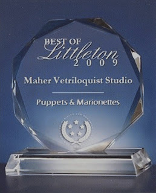

Posthumous Award?
2/16/2010
{kind=link}

Press Release
Maher Ventriloquist Studio Receives 2009 Best of Littleton Award.
Maher Ventriloquist Studio Receives 2009 Best of Littleton Award.
U.S. Commerce Association’s Award Plaque Honors the Achievement.
WASHINGTON D.C., June 8, 2009 -- Maher Ventriloquist Studio has been selected for the 2009 Best of Littleton Award in the Puppets & Marionettes category by the U.S. Commerce Association (USCA).
The USCA "Best of Local Business" Award Program recognizes outstanding local businesses throughout the country. Each year, the USCA identifies companies that they believe have achieved exceptional marketing success in their local community and business category. These are local companies that enhance the positive image of small business through service to their customers and community.
Various sources of information were gathered and analyzed to choose the winners in each category. The 2009 USCA Award Program focused on quality, not quantity. Winners are determined based on the information gathered both internally by the USCA and data provided by third parties.
* * * * *
Note From Clinton: It's not hard to be the "Best" in your city when you are the only such business in town, but being the best three years after going out of business is a pretty good trick indeed - even when closed we're still the best! I'm not sure that's a compliment. Hmmm. Of course, we're informed that to receive the crystal award shown here we need to send $199.95 for engraving and handling. I could have one made for a fraction of the price from the owner of the local trophy shop down the street. And I'll bet he could even spell "Ventriloquism" correctly.
:-)